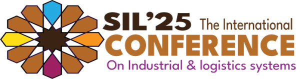

THE 8th
EDITION
OF

Under the theme
« Digital Transformation in Automotive & Aeronautical Supply Chains »
23-25 October, 2025
Marrakech, Morocco
Provisional Conference Program
SIL'25 Marrakech, Morocco | 23-25 October 2025
Jeudi 23 octobre
Vendredi 24 octobre
Samedi 25 octobre